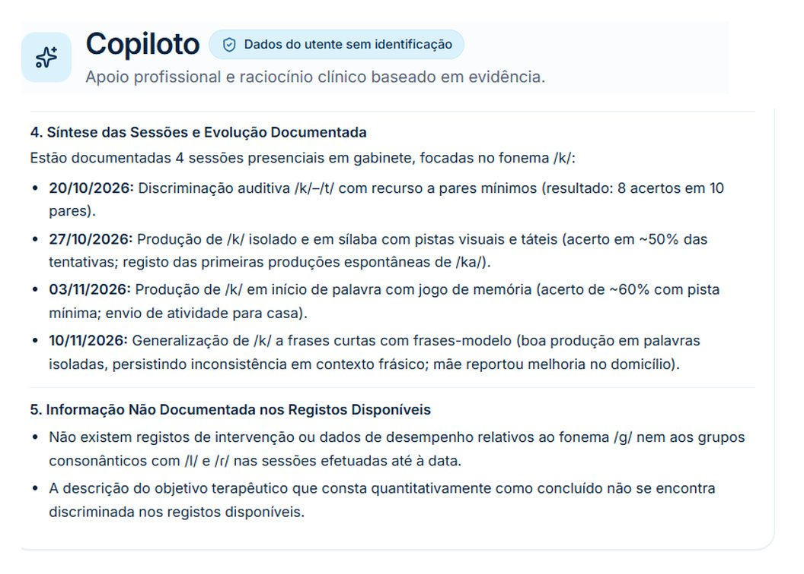
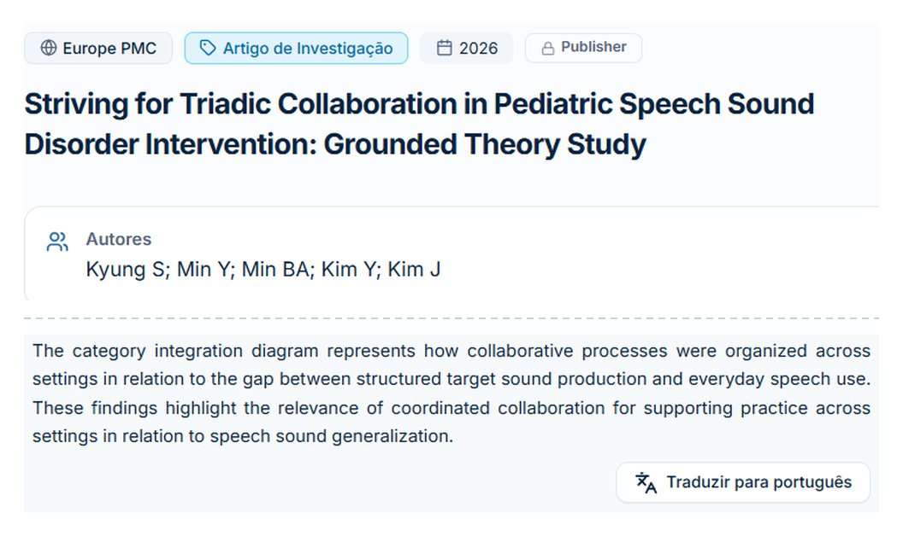

Porquê este convite
No questionário sobre a prática clínica, duas respostas destacaram-se:
Construímos um primeiro protótipo a pensar nisso. O passo seguinte é ouvir quem respondeu.
O que vai ser mostrado
1Relatório com rascunho da IA
A partir dos registos do processo, a IA prepara um rascunho. Não inventa: o que falta fica assinalado. O terapeuta revê, corrige e decide.
[Rascunho redigido com IA a partir dos registos — rever e validar antes de utilizar]
MOTIVO DO ACOMPANHAMENTO
O utente, de 5 anos e 7 meses de idade, iniciou o acompanhamento em Terapia da Fala na sequência de queixas apresentadas pelos pais e pela educadora relativamente a uma fala pouco inteligível para pessoas não familiares.
RECOMENDAÇÕES
- Manutenção da intervenção semanal em Terapia da Fala;
- Reavaliação formal aos 3 meses após a avaliação inicial.
[A completar pelo terapeuta: data de emissão do relatório, local e assinatura/número de cédula profissional]
Excertos de um relatório real de demonstração, com dados fictícios.
2Copiloto que protege o utente
É possível pensar um caso em conjunto com a IA sem expor o utente: o nome e os contactos não são enviados. O selo Dados do utente sem identificação está sempre à vista.

3Biblioteca científica em português
Artigos de referência reunidos num só lugar, com a fonte sempre indicada e um botão para traduzir o resumo para português.

O pedido
- 20 a 30 minutos, no dia e hora mais convenientes.
- Presencial ou por videochamada, à escolha.
- Sem compromisso. O objetivo é ouvir opiniões sinceras.
- Só com dados fictícios. Não é preciso trazer nada sobre utentes.
Como marcar
Basta responder à mensagem de WhatsApp que acompanha esta página, indicando o dia e a hora mais convenientes.